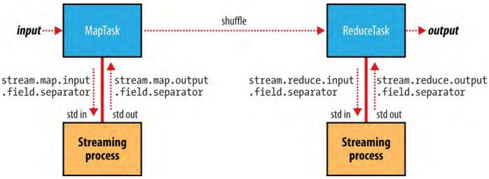

MapReduce类型（MapReduce Types）
Hadoop MapReduce中的map和reduce函数有如下基本格式：
map: (K1, V1) → list(K2, V2)
reduce: (K2, list(V2)) → list(K3, V3)
通常，map输入的键和值类型（K1、V1）和map输出类型（K2、V2）不同。可是，reduce输入必须和map输出的类型相同，尽管reduce输出类型（K3、V3）可能和reduce输入类型不同。Java API的基本格式如下：
public class Mapper<KEYIN, VALUEIN, KEYOUT, VALUEOUT> {
public class Context extends MapContext<KEYIN, VALUEIN, KEYOUT, VALUEOUT> {
// ...
}
protected void map(KEYIN key, VALUEIN value,
Context context) throws IOException, InterruptedException {
// ...
}
}
public class Reducer<KEYIN, VALUEIN, KEYOUT, VALUEOUT> {
public class Context extends ReducerContext<KEYIN, VALUEIN, KEYOUT, VALUEOUT> {
// ...
}
protected void reduce(KEYIN key, Iterable<VALUEIN> values,
Context context) throws IOException, InterruptedException {
// ...
}
}
context对象是用来提供键值对的，使用输出类型将键值对参数化，所以write()方法的签名是：
public void write(KEYOUT key, VALUEOUT value)
throws IOException,InterruptedException
因为Mapper和Reducer是独立的类，类型参数有不同的作用域，Mapper中KEYIN（比如）的实际类型可能与Reducer中同名的（KEYIN）有的类型不同。例如，在最大气温例子中，Mapper的KEYIN类型是LongWritable而Reducer中是Text。类似地，尽管map输出类型和reduce输入类型必须匹配，但是Java编译器不会要求它们相同。
参数类型的抽象类型名不同，但是格式是相同的。
如果使用了combiner函数，它的格式和reduce函数相同（并且也是Reducer的实现），除了它的输出是中间的键值类型（K2、V2）以满足reduce函数：
map: (K1, V1) → list(K2, V2)
combiner: (K2, list(V2)) → list(K2, V2)
reduce: (K2, list(V2)) → list(K3, V3)
通常，combiner和reduce函数是相同的，即K3和K2相同，V3和V2相同。
分区函数作使用中间键和值类型并且返回分区索引。事实上，分区仅仅由键决定（值被忽略）：
patition:(K2, V2) → integer
用Java表示：
public abstract class Partitioner<KEY, VALUE> {
public abstract int getPartition(KEY key, VALUE value, int numPartitions);
}
输入类型通过输入格式设置。所以，比如，一个TextInputFormat生成键的类型为LongWritable、值的类型是Text。其它类型通过调用Job（旧API为JobConf）的方法明确地设置。如果没有明确地设置，中间类型默认为输出类型，默认是LongWritable和Text。所以，如果K2和K3是相同的，就不用调用setMapOutputKeyClass()方法，因为它会回到调用setOutputKeyClass()方法设置的类型。同样地，如果V2和V3相同只用使用setOutputValueClass()。
表 8-1.Configuration of MapReduce types in the new API
| Property for configuring types | Job setter method | types |
|---|---|---|
| mapreduce.job.inputformat.class | setInputFormatClass() | K1、V1 |
| mapreduce.map.output.key.class | setMapOutputKeyClass() | K2 |
| mapreduce.map.output.value.class | setMapOutputValueClass() | V2 |
| mapreduce.job.output.key.class | setOutputKeyClass() | K3 |
| mapreduce.job.output.value.class | setOutputValueClass() | V3 |
| Properties that must be consistent with the types | Job setter method | types |
|---|---|---|
| mapreduce.job.map.class | setMapperClass() | K1、V1、K2、V2 |
| mapreduce.job.combine.class | setCombinerClass() | K2、V2 |
| mapreduce.job.partitioner.class | setPartitionerClass() | K2、V2 |
| mapreduce.job.output.key.comparator.class | setSortComparatorClass() | K2 |
| mapreduce.job.output.group.comparator.class | setGroupingComparatorClass() | K2 |
| mapreduce.job.reduce.class | setReducerClass() | K2、V2、K3、V3 |
| mapreduce.job.outputformat.class | setOutputFormatClass() | K3、V3 |
表 8-2.Configuration of MapReduce types in the old API
| Property for configuring types | Job setter method | types |
|---|---|---|
| mapred.input.format.class | setInputFormat() | K1、V1 |
| mapred.mapoutput.key.class | setMapOutputKeyClass() | K2 |
| mapred.mapoutput.value.class | setMapOutputValueClass() | V2 |
| mapred.output.key.class | setOutputKeyClass() | K3 |
| mapred.output.value.class | setOutputValueClass() | V3 |
| Properties that must be consistent with the types | Job setter method | types |
|---|---|---|
| mapred.mapper.class | setMapperClass() | K1、V1、K2、V2 |
| mapred.map.runner.class | setMapRunnerClass() | K1、V1、K2、V2 |
| mapred.combiner.class | setCombinerClass() | K2、V2 |
| mapred.partitioner.class | setPartitionerClass() | K2、V2 |
| mapred.output.key.comparator.class | setOutputKeyComparatorClass() | K2 |
| mapred.output.value.groupfn.class | setOutputValueGroupingComparator() | K2 |
| mapred.reducer.class | setReducerClass() | K2、V2、K3、V3 |
| mapred.output.format.class | setOutputFormat() | K3、V3 |
可能有点儿奇怪，用于设置中间和最终输出类型的方法都存在。毕竟，为什么不能根据mapper和reducer的联系来确定这些类型呢？这个答案和Java泛型的限制有关：类型擦除意味着在运行时类型信息不是一直存在的，所以必须明确告知Hadoop类型。这也意味着可以用不合适的类型配置一个MapReduce job，因为编译时不会检查配置。必须与MapReduce类型一致的设置在表8-1的下半部分已经列出。在job执行时，能检测到类型冲突，因此，可以用少量数据运行一个job测试可以发现类型不匹配，进而修复不匹配的类型。
1.1、默认MapReduce Job（The Default MapReduce Job）
在没有设置MapReduce的mapper或reducer时，会发生什么？尝试运行如下最小MapReduce程序：
public class MinimalMapReduce extends Configured implements Tool {
@Override
public int run(String[] args) throws Exception {
if (args.length != 2) {
System.err.printf("Usage: %s [generic options] <input> <output>\n",
getClass().getSimpleName());
ToolRunner.printGenericCommandUsage(System.err);
return -1;
}
Job job = new Job(getConf());
job.setJarByClass(getClass());
FileInputFormat.addInputPath(job, new Path(args[0]));
FileOutputFormat.setOutputPath(job, new Path(args[1]));
return job.waitForCompletion(true) ? 0 : 1;
}
public static void main(String[] args) throws Exception {
int exitCode = ToolRunner.run(new MinimalMapReduce(), args);
System.exit(exitCode);
}
}
运行它，只设置输入路径和输出路径：
% hadoop MinimalMapReduce "input/ncdc/all/190{1,2}.gz" output
会得到一些输出：在输出目录中一个名为part-r-00000的文件。其中某些行如下（为了排版进行了截取）：
0→0029029070999991901010106004+64333+023450FM-12+000599999V0202701N01591...
0→0035029070999991902010106004+64333+023450FM-12+000599999V0201401N01181...
135→0029029070999991901010113004+64333+023450FM-12+000599999V0202901N00821...
141→0035029070999991902010113004+64333+023450FM-12+000599999V0201401N01181...
270→0029029070999991901010120004+64333+023450FM-12+000599999V0209991C00001...
282→0035029070999991902010120004+64333+023450FM-12+000599999V0201401N01391...
每行是一个整数加制表符加原始的天气数据信息。诚然，它不是一个有用的程序，但是理解它如何产生这些输出提供了一些Hadoop使用默认mapper或reducer运行的洞见。例8-1展示了一个与MinimalMapReduce有相同结果的程序，但是明确地设置了job设置为默认值。
例 8-1 A minimal MapReduce driver，with the defaults explicitly set
public class MinimalMapReduceWithDefaults extends Configured implements Tool {
@Override
public int run(String[] args) throws Exception {
Job job = JobBuilder.parseInputAndOutput(this, getConf(), args);
if (job == null) {
return -1;
}
job.setInputFormatClass(TextInputFormat.class);
job.setMapperClass(Mapper.class);
job.setMapOutputKeyClass(LongWritable.class);
job.setMapOutputValueClass(Text.class);
job.setPartitionerClass(HashPartitioner.class);
job.setNumReduceTasks(1);
job.setReducerClass(Reducer.class);
job.setOutputKeyClass(LongWritable.class);
job.setOutputValueClass(Text.class);
job.setOutputFormatClass(TextOutputFormat.class);
return job.waitForCompletion(true) ? 0 : 1;
}
public static void main(String[] args) throws Exception {
int exitCode = ToolRunner.run(new MinimalMapReduceWithDefaults(), args);
System.exit(exitCode);
}
}
这里用工具类JobBuilder简化了代码，如下为JobBuilder类中的相关代码：
public static Job parseInputAndOutput(Tool tool, Configuration conf,
String[] args) throws IOException {
if (args.length != 2) {
printUsage(tool, "<input> <output>");
return null;
}
Job job = new Job(conf);
job.setJarByClass(tool.getClass());
FileInputFormat.addInputPath(job, new Path(args[0]));
FileOutputFormat.setOutputPath(job, new Path(args[1]));
return job;
}
public static void printUsage(Tool tool, String extraArgsUsage) {
System.err.printf("Usage: %s [genericOptions] %s\n\n",
tool.getClass().getSimpleName(), extraArgsUsage);
GenericOptionsParser.printGenericCommandUsage(System.err);
}
默认的输入格式为TextInputFormat，产生的键类型为LongWritable（文件中每行开始的偏移量）、值类型为Text（每行的文本）。这就解释了最终输出中整数的来源：它们是行偏移量。
默认的mapper只是Mapper类，它直接把输入键和值发送到输出：
public class Mapper<KEYIN, VALUEIN, KEYOUT, VALUEOUT> {
protected void map(KEYIN key, VALUEIN value,
Context context) throws IOException, InterruptedException {
context.write((KEYOUT) key, (VALUEOUT) value);
}
}
Mapper类是一个泛型，这让它能够使用任何类型的键或值运行。这种情况下，map输入和输出的键类型为LongWritable，map输入和输出的值的类型为Text。
默认的partitioner是HashPartitioner，它将一条记录的键哈希化以决定这条记录属于哪个分区。每个分区由一个reduce task处理，所以对于某个job分区的数目和reduce tasks的数目相同：
public class HashPartitioner<K, V> extends Partitioner<K, V> {
public int getPartition(K key, V value,
int numReduceTasks) {
return (key.hashCode() & Integer.MAX_VALUE) % numReduceTasks;
}
}
键的哈希值通过与最大的integer值进行位与（bitwise ANDing）转换为非负整数。然后将它对分区数取模（modulo）来获取这条记录所属分区的索引。
默认只有一个reducer，因而只有一个分区；这种情况下partitioner的行为无关紧要，因为所有记录都放在一个分区。但是，当有多个reduce tasks时理解HashPartitioner的行为很重要。假设键的哈希函数很好，reduce tasks之间的记录分配就会很均匀，使用相同键的所有记录会被同一个reduce task处理。
这里没有设置map tasks的数量。原因是，map数量与输入转变为的输入分片的数量相等，这个数量由输入的大小和文件block大小（如果文件在HDFS中）决定。
Reducers数量的选择：默认一个reducer对Hadoop新用户来说可能是一个陷阱。事实上，几乎所有的jobs都应该设置为一个较大的数值；否则job会非常慢，因为所有的中间数据都由一个reduce task处理。为一个job选择reducers的数量比起是一个科学更像是一门艺术。增加reducers的数量使reduce阶段更短，因为增加了并行度。但是，如果reducers数量太多，结果会有太多的小文件，这是欠佳的。首要原则是，每个reducer运行差不多5分钟，并且每个reducer处理至少一个HDFS block量等价的map输出。
默认的reducer是Reducer，也是一个泛型，简单地将所有输入写到输出：
public class Reducer<KEYIN, VALUEIN, KEYOUT, VALUEOUT> {
protected void reduce(KEYIN key, Iterable<VALUEIN> values, Context context
Context context) throws IOException, InterruptedException {
for (VALUEIN value: values) {
context.write((KEYOUT) key, (VALUEOUT) value);
}
}
}
对于这个job，输出键是LongWritable、输出值是Text。事实上，这个MapReduce程序的所有键都是LongWritable并且所有值都是Text，因为它们是输入键值的类型，并且map和reduce函数都是identity functions（恒等函数？？）根据定义保留了类型。但是，大多数MapReduce程序不会自始至终都是用相同的键或值类型，那么就需要配置job并声明它使用的那些类型。
默认的输出格式是TextOutputFormat，用来写输出记录，每行一条，它将键和值转换为字符串并用制表符分隔。这就是输出结果由制表符分隔的原因：它是TextOutputFormat的一个特征。
1.1.1、流中的键和值（Keys and values in Streaming）
流应用在键值对转换为一系列字节并且通过标准输入发送到map或reduce进程时可以控制所使用的分隔符。默认的分隔符是制表符（tab character），但是如果键或值包含制表符把分隔符换为其它字符就很有用了。
类似地，当map或reduce写输出键值对时，也可以配置所使用分隔符。此外，输出的键可以是不仅仅由第一个属性（field）组成：可以由前n（通过stream.num.map.output.key.fields或者stream.num.reduce.output.key.fields定义）个属性构成，值则由剩下的属性构成。例如，如果流进程的输出属性是a,b,c，n为2，那么键为a,b，值为c。
分隔符可以独立地为maps和reduces配置。表8-3列出了配置属性，图8-1的数据流路径也展示了这些属性
表 8-3.Streaming separator properties
| Property name | Type | Default value | Description |
|---|---|---|---|
| stream.map.input.field.separator | String | \t | 当把输入键和值字符串作为字节流传递给流的map进程时使用的分隔符 |
| stream.map.output.field.separator | String | \t | 当把流map进程的输出切分为键值字符串作为map输出时使用的分隔符 |
| stream.num.map.output.key.fields | int | 1 | 被stream.map.output.field.separator分隔的用来作为map输出key的属性数量 |
| stream.reduce.input.field.separator | String | \t | 当把输入键和值字符串作为字节流传递给流的reduce进程时使用的分隔符 |
| stream.reduce.output.field.separator | String | \t | 当把流reduce进程的输出切分为键值字符串作为reduce最终输出时使用的分隔符 |
| stream.num.reduce.output.key.fields | int | 1 | 被stream.reduce.output.field.separator分隔的用来作为reduce输出key的属性数量 |
图8-1.Where separators are used in a Streaming MapReduce job

这些设置与输入和输出格式没有任何关系。例如，如果stream.reduce.output.field.separator被设置为冒号，reduce流进程把一行a:b写到标准输出，流的reducer就会知道键为a值为b。使用标准的TextOutputFormat，这调酒流会被以制表符分隔的a和b的形式写到输出文件。通过mapreduce.output.textoutputformat.separator可以改变TextOutputFormat使用的分隔符。